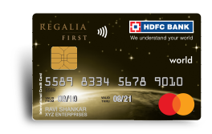

EXPRESSIVEPEN
Discover the key to financial peace of mind by unlocking the hidden secrets of your credit card status
Hidden secrets surrounding credit card status:Did you know that your credit card status holds the key to unlocking exclusive perks, rewards, and financial opportunities?
For Axis Bank Credit Card
Axis Bank Credit Card Status:
Axis Bank offers a range of credit cards with various features and benefits. If you are an Axis Bank credit cardholder or have recently applied for a credit card from Axis Bank, it's essential to stay updated on your credit card status. Here are some details related to Axis Bank credit card status:
Checking Axis Bank Credit Card Application Status:
- Visit the official Axis Bank website www.axisbank.com or use their mobile app.
- Look for the "Credit Cards" section and navigate to the "Track Application" or "Check Application Status" page.
- Enter the required details, such as your application reference number, mobile number, or date of birth.
- Submit the information and wait for the system to retrieve your credit card application status.
- The result will indicate whether your application is approved, pending, or rejected.
Understanding Axis Bank Credit Card Status Terminology:
- Approved: Indicates that your credit card application has been successfully processed and approved.
- Pending: Implies that your application is under review or requires additional verification before a final decision is made.
- Rejected: Signifies that your credit card application has been declined based on the bank's evaluation criteria.
- Dispatched: Shows that your credit card has been sent for delivery and is in transit.
Contacting Axis Bank Customer Support:
- If you have any queries or concerns regarding your Axis Bank credit card status, reach out to their customer support team
- Dial the customer care helpline or use the designated email or chat support options.
- Provide the necessary details, such as your name, application reference number, or registered mobile number, to help the support team assist you efficiently.
For Axis Bank Credit Card
For HDFC Bank Credit Card
HDFC Credit Card Status: A Complete Guide
Are you eagerly awaiting the arrival of your HDFC credit card? Tracking your credit card status is crucial to stay informed and ensure a seamless experience. In this comprehensive guide, we'll walk you through the process of checking your HDFC credit card status and provide valuable insights. Get ready to unlock the power of your HDFC credit card with these simple steps!
आप ये अवसर का लाभ उठाना चाहते हैं तो तुरत ही नीचे Click करें.

How To Tracking HDFC Credit Card Application Status:
- Visit the HDFC Bank Official Website: www.hdfcbank.com or use their mobile app.
- Open your preferred web browser and navigate to the HDFC Bank official website.
- Look for the "Credit Cards" section or use the search bar to locate the credit card status page.
- On the HDFC Bank credit card status page, you'll find options to track your application or check the delivery status of your credit card.
- Click on the appropriate link based on your current status or requirement.
Tracking HDFC Credit Card Application Status:
- If you've recently applied for an HDFC credit card, click on the "Track Application" link.
- Enter the necessary details, such as your application reference number, registered mobile number, or date of birth.
- Submit the information and wait for the system to retrieve your credit card application status.
Checking HDFC Credit Card Delivery Status:
- Once your HDFC credit card is approved, it goes through a processing and delivery phase.
- If you're eager to know when your credit card will arrive, click on the "Track Delivery" or "Delivery Status" link.
- Enter the required information, such as your credit card number, registered mobile number, or date of birth.
- Submit the details and discover the current status of your HDFC credit card delivery.
- If you encounter any issues or have queries about your HDFC credit card status, don't hesitate to contact HDFC customer support.
- Dial the dedicated helpline number or use the available email or chat support options.
- Provide your name, application reference number, or registered mobile number to help the support team assist you effectively.
For HDFC Bank Credit Card
Stay updated and track your HDFC credit card status to ensure a hassle-free experience. By following these steps, you'll be able to monitor your application progress and eagerly await the arrival of your HDFC credit card. Unlock a world of financial opportunities with your HDFC credit card and enjoy the convenience and benefits it brings.